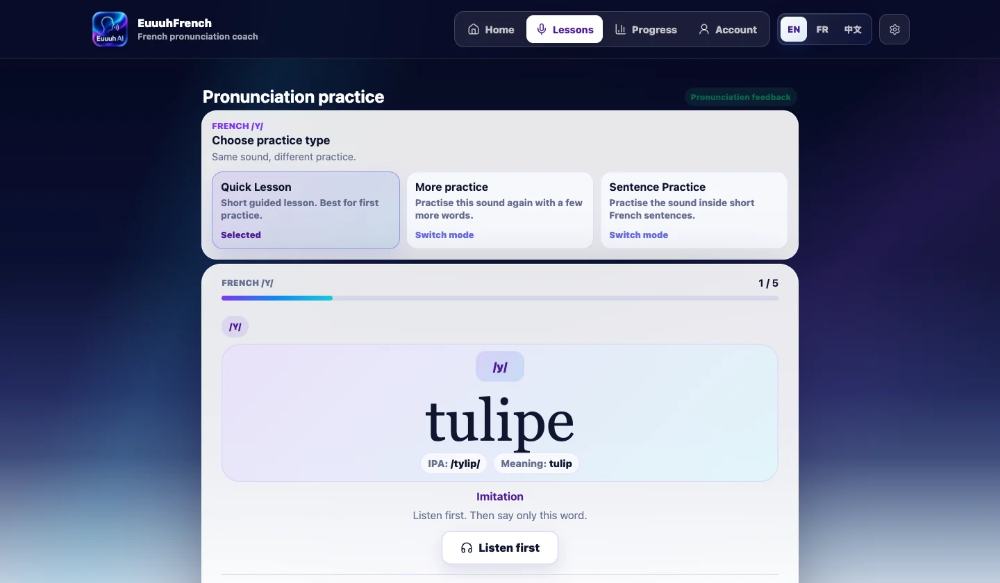
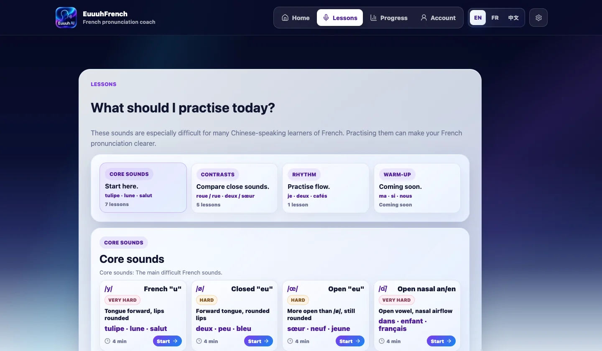

EuuuhFrench AI started with a deliberately narrow goal: help learners practise the French sounds that are often difficult when coming from Mandarin Chinese. It was not meant to become a full French course. The useful unit was smaller: listen, record, replay, notice one thing, and try again.

The first useful loop
The earliest stable version was built around native French examples, learner recording, replay, and basic feedback. That loop mattered because pronunciation practice can become vague very quickly. A learner needs a model, a chance to produce the sound, and a way to compare the attempt with something concrete.
From there, the app moved from demo-style feedback toward provider-backed pronunciation analysis. Speechace support made the feedback feel more grounded, but I kept the product wording careful. Automated pronunciation feedback can be useful, but it should not pretend to know everything a human teacher can hear.
From words to guided practice
The next step was content. Isolated sounds are useful, but learners also need words, sentences, and contrast pairs. Practice modes added more structure: quick lessons, word practice, sentence practice, and focused work on sounds such as /y/, /u/, /ø/, /œ/, and the French nasal vowels.

Nasal vowels became a major content milestone. They are difficult for many learners because the contrast is not only about one letter or one spelling pattern. The app gradually added examples, feedback paths, and mouth-shape support for sounds such as /ɑ̃/, /ɔ̃/, and /ɛ̃/.
Progress without noise
As the practice bank grew, progress needed to become more useful. The app added local progress, optional account sync, Smart Review, daily practice planning, and per-sound signals. The purpose was not to turn learning into a scoreboard. It was to help the learner know what to practise next.
The progress work also made the app feel more complete: returning learners could see repetition history, review recent attempts, and move through short sessions without losing the thread of their practice.
Where the coach stands now
The current v1.10 direction is compact and practical. After recording, the learner sees the latest score, their own recording, the native model, one pronunciation feedback card, and optional history only when needed. Sound-specific tips are short and Mandarin-friendly. Mouth videos appear after repeated difficulty, not immediately for every attempt.

This is the shape I want the app to keep: focused pronunciation practice, clear native audio, careful AI-assisted feedback, and a calm rhythm of repetition. It remains experimental and research-informed, but it is now much closer to a real pronunciation coach than a first MVP.
For readers who want the development archive rather than the story version, I also keep a concise changelog from the first idea to the current pronunciation coach polish.